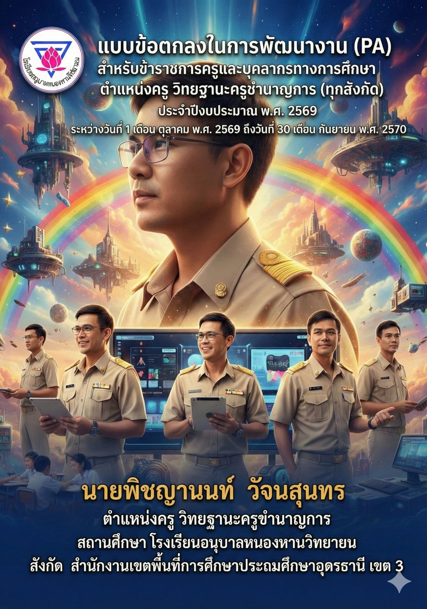

ข้อมูลทั่วไป
- ชื่อ: นายพิชญานนท์ วัจนสุนทร
- ตำแหน่ง: ครู วิทยฐานะชำนาญการ
- โรงเรียน: อนุบาลหนองหานวิทยายน
- สังกัด: สพป.อุดรธานี เขต 3
- งานพิเศษ: เจ้าหน้าที่พัสดุ
Science & Technology Portfolio
ครูชำนาญการ กลุ่มสาระการเรียนรู้วิทยาศาสตร์และเทคโนโลยี โรงเรียนอนุบาลหนองหานวิทยายน สำนักงานเขตพื้นที่การศึกษาประถมศึกษาอุดรธานี เขต 3
แดชบอร์ดติดตามผู้เรียนสำหรับห้อง SMT ป.4/2 ใช้ดูภาพรวมการเข้าเรียน งานค้าง พฤติกรรม และสัญญาณความเสี่ยงในหน้าเดียว

ระบบบันทึกหลังสอนแบบรวดเร็ว ใช้พิมพ์หรือพูดสรุปหลังสอน แล้วช่วยจัดหมวด K-P-A ปัญหา แนวทางแก้ไข และแท็กหลักฐาน PA ให้พร้อมนำไปใช้ต่อ

Profile
ICT Learning Practice
ครูประจำชั้น และสอนคณิตศาสตร์ วิทยาการคำนวณ ประวัติศาสตร์ สังคมศึกษา และภาษาอังกฤษเพิ่มเติม
ปฏิบัติการสอนวิทยาการคำนวณ
ร่วมจัดกิจกรรม Co+STEM2 กับคณะครู
Performance Agreement
ผลประเมินตนเองรวมจาก 3 องค์ประกอบ
ประสิทธิภาพและประสิทธิผลการปฏิบัติงานตามมาตรฐานตำแหน่ง
การมีส่วนร่วมในการพัฒนาการศึกษา
วินัย คุณธรรม จริยธรรม และจรรยาบรรณวิชาชีพ

เพิ่มภาพปกหลักฐาน PA เพื่อสื่อสารภาพรวมงานพัฒนาตามมาตรฐานตำแหน่ง ครูชำนาญการ และเชื่อมโยงกับผลงานดิจิทัลที่ใช้สนับสนุนการจัดการเรียนรู้
Self Assessment Report
ผู้เรียนมีสมรรถนะตามหลักสูตร คุณลักษณะที่พึงประสงค์ และสามารถนำตนเองในการเรียนรู้
ระดับคุณภาพ 4 · ดีสนับสนุนระบบงาน วิสัยทัศน์ แผนงาน การนิเทศ ระบบช่วยเหลือผู้เรียน และเครือข่ายผู้ปกครอง
ระดับคุณภาพ 4 · ดีออกแบบหลักสูตร แผนการจัดการเรียนรู้ กิจกรรมเสริมสมรรถนะ และการวัดประเมินผลอย่างต่อเนื่อง
ระดับคุณภาพ 4 · ดีDigital Innovation
ระบบติดตาม/จัดการข้อมูลการเรียนรู้สำหรับห้องเรียน SMT เชื่อมต่อผ่าน Google Apps Script ของหน่วยงาน
ระบบบันทึกหลังสอนแบบรวดเร็ว ช่วยจัดหมวด K-P-A ปัญหา แนวทางแก้ไข และแท็กหลักฐาน PA จากบันทึกสั้น ๆ
หลักฐานจาก Drive หมวด STEM สะท้อนการประยุกต์แนวคิด IoT/เทคโนโลยีเพื่อแก้ปัญหาและพัฒนาทักษะผู้เรียน
รวบรวมงานต้นแบบระบบสารสนเทศ สื่ออินเทอร์แอคทีฟ และการใช้เครื่องมือดิจิทัลเพื่อสนับสนุนการเรียนรู้
มีส่วนร่วมผลิตสื่อภาพ วิดีโอ หนังสั้น และกิจกรรมสร้างสรรค์ที่เชื่อมโยงทักษะ ICT กับการสื่อสารของนักเรียน
ช่องทางเผยแพร่ผลงานสื่อสร้างสรรค์ของนักเรียนและโรงเรียน ทั้งคลิปวิดีโอ หนังสั้น ข่าวประชาสัมพันธ์ และกิจกรรมที่ใช้ทักษะ ICT เพื่อการสื่อสาร
Classroom Action Research
รายงานวิจัยในชั้นเรียนของนักเรียนชั้นประถมศึกษาปีที่ 2/4 โรงเรียนอนุบาลหนองหานวิทยายน ใช้นวัตกรรมแบบฝึกทักษะการแจกลูกสะกดคำ 5 ชุด ร่วมกับกระบวนการ PDCA
Evidence Archive
แผนการสอน สื่อการสอน ใบกิจกรรม บันทึกหลังสอน และผลลัพธ์จากการจัดการเรียนรู้
แบบสรุปเยี่ยมบ้าน โฮมรูม การอบรมคุณธรรม และการประสานงานกับผู้ปกครอง โดยไม่เผยแพร่ข้อมูลนักเรียนรายบุคคลบนหน้าเว็บ
หลักฐานการแลกเปลี่ยนเรียนรู้ การนิเทศชั้นเรียน และการนำผลไปพัฒนางาน
หลักฐานการจัดทำคู่มือบริหารงบประมาณและงานสนับสนุนการบริหารสถานศึกษาในบทบาทเจ้าหน้าที่พัสดุ
เกียรติบัตร วุฒิบัตร การอบรม และผลงานปฏิบัติที่เป็นเลิศ
ดูคลังเกียรติบัตรทั้งหมดเชื่อมโยง Google Drive สำหรับจัดเก็บเอกสารผลงาน เกียรติบัตร งาน STEM, WebApp และหนังสั้นประจำปีการศึกษา
หลักฐานงานสนับสนุนการบริหารสถานศึกษา เชื่อมกับบทบาทงานพิเศษด้านพัสดุและงบประมาณ
ภาพรวมเอกสารประกอบการพัฒนางานและการสะท้อนผลการจัดการเรียนรู้ตามข้อตกลง PA
หมายเหตุ: โฟลเดอร์มีเอกสารและภาพที่อาจมีข้อมูลส่วนบุคคลของนักเรียน จึงสรุปเป็นหมวดหลักฐานแทนการแสดงไฟล์ทั้งหมดบนหน้าเว็บ